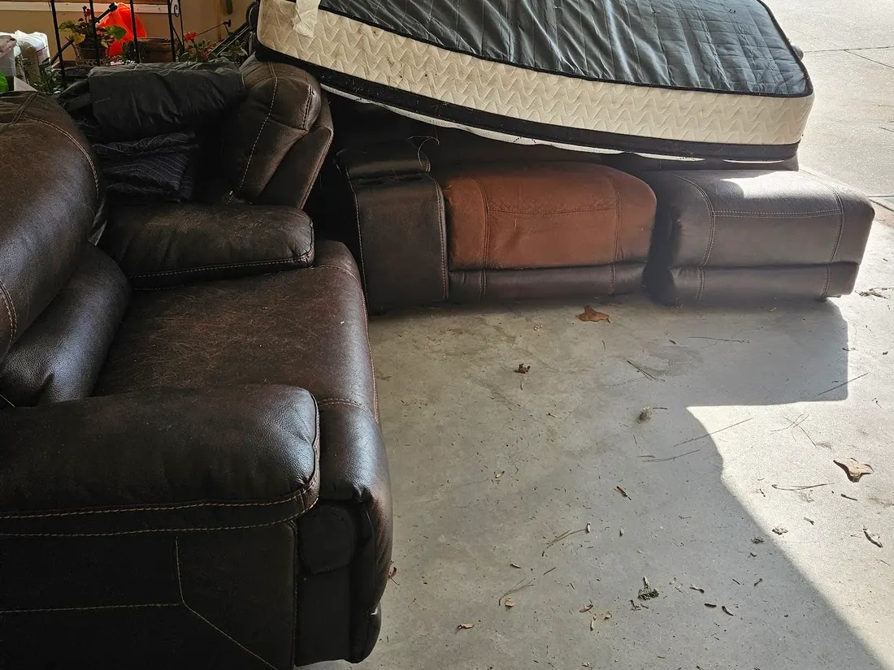
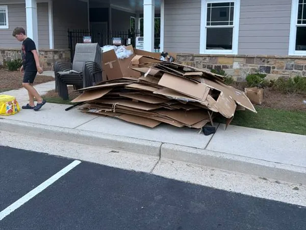
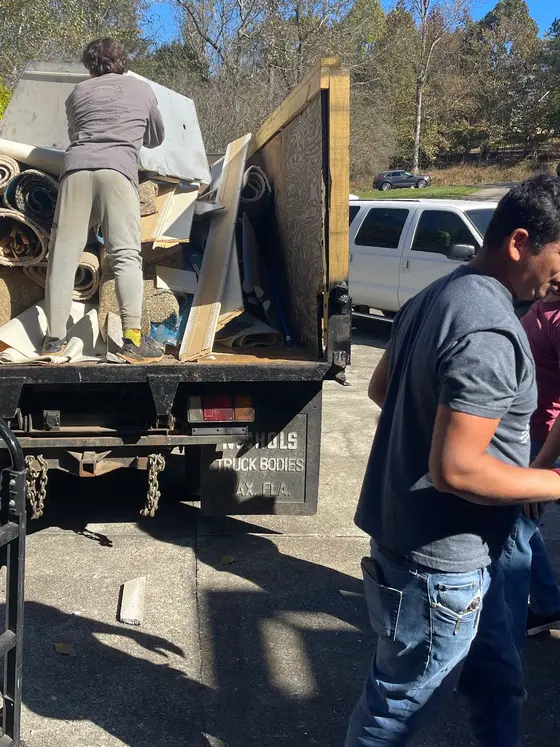

Junk Removal in Lumpkin County, GA
Every May the whole student rental market empties in about a week. We book that week early, and the price Tony quotes is the price you pay.
“Hard workers, very nice and polite. Did a great job and will recommend in the future.”
Sarah Milford · Google ReviewIn May, Every Lease in Dahlonega Ends at Once.
- Dahlonega kicked off America’s first gold rush, and today it’s North Georgia wine country and a college town too. Between UNG rentals turning over, luxury homes at Achasta and Montaluce, and cabins in the hills, something always needs hauling.
- Lumpkin County is close to home base. Dahlonega is a short run, so same-day is usually on the table.
- Landlords with several units get them done back to back on one run, not one call-out each.
- A firm price up front, and that’s the price you pay. No climb in the driveway.
Here’s the whole county he covers.
A Couch Is Not a Truckload. Pay for What You’ve Got.
We price by how much space your load fills in the truck. A few pieces is a small load. A whole-room cleanout fills more. You get that number on the call, and it doesn’t move.
- Full Truck Full home cleanout or major haul $600
- Three-Quarter Truck Multiple items or a room cleanout Garage & spare room jobs $450
- Half Truck Sofa, fridge, or a few mixed items Most single-room jobs $300
- Quarter Truck A few items or a single piece $150
Here’s everything he takes.
Junk Removal Across All of Lumpkin County
Dahlonega is the heart of the county, from downtown and UNG to the wineries and gated communities. We cover all of it. Start with Dahlonega below.
Also covering, all across Lumpkin County:
- University of North Georgia
- Achasta
- Montaluce
- Wolf Mountain
- Cavender Creek
- Chestatee River
- Porter Springs
- Downtown Dahlonega
What Tony Hauls Across Lumpkin County.
Full scope, from a single dorm-room haul to a whole estate cleanout. Between UNG, the wineries, and the cabins, he stays busy year-round. Tap any card for the details.

Junk Removal
The pile from a UNG move-out, a downtown remodel, or a cabin in the hills. One trip, all of it.
Junk Removal
- Furniture & household items
- Electronics & mattresses
- Yard debris & scrap
- Same-day usually available

Estate Cleanouts
Achasta and Montaluce homes, and longtime downtown Dahlonega families. Achasta and the older Dahlonega blocks, handled quietly.
Estate Cleanouts
- Full household clearance
- Furniture, appliances, personal items
- Donates & recycles before landfill
- Respectful & discreet

Garage Cleanouts
Cabin and vacation-property prep before the season. Cleared floor to ceiling in one visit.
Garage Cleanouts
- Full garage cleared in one trip
- Tools, equipment & boxes
- Old furniture & appliances
- Cabin & seasonal prep

Appliance Removal
Fridges, washers, dryers. Unhooked, hauled out, disposed of the right way.
Appliance Removal
- Refrigerators & freezers
- Washers, dryers & dishwashers
- Stoves & microwaves
- Refrigerant handled properly

Hot Tub Removal
Vacation rentals and the gated communities swap them out. Drained, broken down, gone.
Hot Tub Removal
- We drain it. No prep needed.
- Broken down on-site
- Deck & yard protected
- Electrical disconnect included
See the full list on the services page, or call and we’ll tell you straight. (404) 632-9165
Same crew, all of it. Here’s what Lumpkin County runs on.
A College Town With Wineries Attached.
Lumpkin has two economies that both create work: a university that empties every spring, and a town people drive up to on weekends.

UNG Move-Out Week
The University of North Georgia sits in the middle of Dahlonega, and the rental market around it runs on a single calendar. Leases end together, so in the space of about a week every student house and apartment in town turns over at the same time.
What comes out is always the same list and always more than anyone expected: mattresses, futons, mini-fridges, particleboard desks and shelving that will not survive a move, an armchair somebody bought secondhand two years ago. Multiply it by a full unit and it is a truckload, and the dumpster behind the building filled up on the first day.
If you are a landlord or a property manager with more than one unit, we do them back to back on one run rather than charging a call-out for each. That week books up, so the earlier you get on the calendar the better your turnaround before the next lease starts.
“Called for a quick junk removal and hour later came through and got it all done, definitely recommend and will be using the services in the future.”

The Square, the Wineries, and Achasta
The rest of the year Lumpkin runs on visitors. Dahlonega’s square is a gold rush town center full of shops and restaurants, and the county is the heart of North Georgia wine country with Wolf Mountain, Montaluce and Cavender Creek drawing people up all season.
Tasting rooms, event barns and restaurants turn over like any hospitality business: furniture replaced between seasons, a dining room reworked, and the cardboard and packaging that stacks up behind a venue after a busy weekend run. We clear that when your doors are shut, usually early in the day.
Then there are the residential sides of the county, Achasta along the Chestatee and the cabins scattered through the hills, where the work is estate cleanouts and garages rather than turnover.
“Super easy to work with! Did a great job, and were very communicative, and a pleasure to work with. Would highly recommend for any junk removal needs!”
Here’s the owner who books that week.
Tony Built the Standard. The Crew Runs It Across Lumpkin County.
That isn’t luck. It’s a checklist.


-
01
One honest price, start to finish.
A real Brawler answers, never a call center. You get the price on the call, and that quote is the number you pay.
-
02
We show up when we said we would.
A set time, not a window. Call before noon and same day is usually on the table across Lumpkin County.
-
03
Hauled right, and fully covered.
Donated, resold, or recycled first, with the landfill last. Licensed, insured, and workers’ comp covered.
“Super easy to work with! Did a great job, and were very communicative, and a pleasure to work with. Would highly recommend for any junk removal needs!”
The Reviews Tell the Whole Story.
“Great group of guys! Got everything out of garage quick!! Would definitely recommend!!!”
“Tony and his Crew were efficient, professional , and courteous. It amazed me how much they could pack into that truck. I seldom ever give five stars for anything, but I guess hell froze over. Give them a go…”
“Outstanding Service! Tony from Junk Brawlers LLC was an excellent young man—very personable and professional. He showed up within 30 minutes of my call and had everything packed up and hauled away quickly and efficiently. It’s rare to find someone so courteous and hardworking. I highly recommend Junk Brawlers LLC and will definitely use them again!”
Lumpkin County is one stop on a territory that runs wider than most people realize.
Open 7 days a week · No commitment to call
Lumpkin County Is One Stop. Here’s the Rest of the Territory.
Tony’s based in Dawsonville and covers cities across the mountains and foothills of North Georgia, Lumpkin County included. Tap any zone on the map to open it.
Also serving, tap a zone above, or pick a city:
Not sure if he comes to your street? Just call. we’ll tell you straight.
Cities We Serve In Lumpkin County
Every city below has its own page with local detail. Same crew, same standard, and same day wherever we can get to you.
Still have a question? You’re not the first.
Everything you were about to Google about Lumpkin County.
Still have a question? Tony picks up: (404) 632-9165
It’s Been Sitting Long Enough.
(404) 632-9165 Tap to call · Tony, the owner, picks up Get It Done Today.Dahlonega, UNG, Achasta, Montaluce · Book move-out week early.